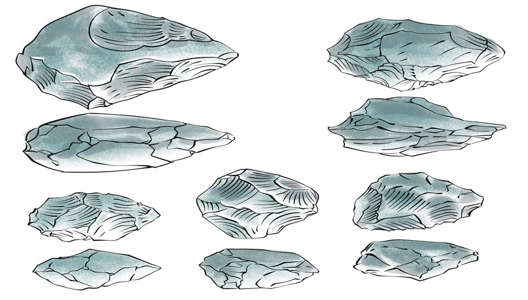
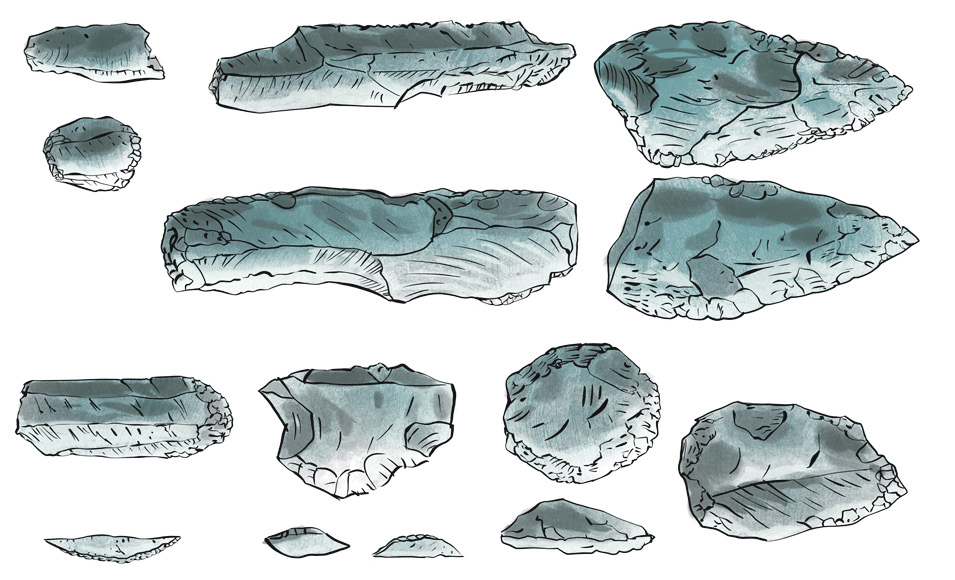

Zama za Mawe za Kati
Sayansi na teknolojia iliendelea kukua zaidi wakati wa Zama za Mawe za Kati. Binadamu alitengeneza zana bora zaidi na nyepesi zikilinganishwa na zile za Zama za Mawe za Kale. Zana za Zama za Mawe za Kati, zilikuwa bora na imara zaidi kwa ajili ya kufanyia kazi mahususi. Binadamu alibuni na kutengeneza kwa ustadi zana nyingi na tofauti kwa matumizi. Mfano, binadamu alitengeneza mishale, visu, mikuki na mashoka kwa kutumia mawe. Kielelezo namba 3, kinawasilisha baadhi ya mifano ya zana za Zama za Mawe za Kati.

45